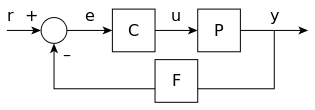

经典控制与现代控制理论的区别与联系
控制理论是工程学与数学的跨领域分支，主要处理在有输入信号的动力系统的行为。系统的外部输入称为“参考值”，系统中的一个或多个变量需随着参考值变化，控制器处理系统的输入，使系统输出得到预期的效果。
控制理论一般的目的是借由控制器的动作让系统稳定，也就是系统维持在设定值，而且不会在设定值附近晃动。
控制论简介
控制理论是
- 一个研究如何调整动态系统特性的理论。
- 科学中跨学科的领域，起源于工程及数学，逐渐的应用在许多社会科学中，例如心理学、社会学（社会学中的控制理论）、犯罪学及金融系统。
控制系统可以视为具有四种机能的系统：量测、比较、计算及修正。这四个机能可以用五种元素来实现：感测器、换能器、发送器、控制器及最终控制元件。量测机能是由感测器、换能器及发送器执行，在实务应用上，这三个元素会整合在一个单体内，像是电阻温度计。比较和计算的机能是由控制器执行，可能是电子式的比例控制（P控制）、PI控制、PID控制、双稳态的迟滞控制，也可能是可编程逻辑控制器（PLC）。早期的控制器也可能是机械式的，像是离心式调速器或是化油器。修正机能是由最终控制元件执行，最终控制元件改变系统的输出，因此影响操纵或控制的变量。
范例
车辆的巡航定速系统是让车辆维持在由驾驶者设定的固定参考速度。此时控制器为巡航定速系统，车辆为受控体（plant），而系统是由控制器和车辆所组成，而控制变量是引擎节流阀的位置．会决定引擎可以产生的功率。
一种最单纯的作法是当驾驶者启动巡航定速系统时，固定引擎节流阀的位置。但是若驾驶者在平坦的路面启动巡航定速系统，车辆在上坡时速度会较慢，车辆在下坡时速度又会较快。这种的控制器称为开环控制器，因为没有去量测系统输出（车辆速度）并且影响控制变量（节流阀位置），因此此系统无法去针对车辆遇到的变化（像路面坡度的变动）去进行调整。
在闭环控制系统中，利用感测器量测系统输出（车辆速度），并将资料送入控制器中，控制器依资料调整控制变量（节流阀位置），来达到维持理想系统输出（使车辆速度和驾驶者设定的参考速度一致）。此时若车辆在上坡时，感测器会量到车辆的速度变慢，因此会调整节流阀位置，加大引擎输出功率，使马达加速。因为有量测车辆速度的回授，因此控制器可以配合车辆速度的变化进行动态调整。因此产生了控制系统中的“环”范式：控制变量影响系统输出，而再根据量测到的系统输出去调整控制变量。
经典控制理论
为了克服开环控制器的限制，在控制理论中导入了反馈。闭环的控制器利用回授来控制动态系统的状态或输出。其名称来自系统中的讯息路径：程序输入（例如马达的电压）影响程序输出（例如马达的电流或转矩），利用感测器量测输出，再将量测资料送到控制器中处理，结果送回控制器作为输入信号之一，因此成为一闭环。
相对于开环控制器，闭环控制器有以下的优点：
- 噪声抑制能力（像巡航定速中的路面坡度）。
- 即使在数学模型有一些不确定性的情形下（如模型结构和实际系统不是完全符合，或是模型参数和实际数值不是完全一致），仍有一定程度的性能。
- 可以稳定不稳定的系统
- 减少对于参数变动的灵敏度
- 提升命令追随（命令变化时，系统配合命令变化）的性能
有些系统中，同时出现开环及闭环的控制，此时的开环会称为前馈，目的是为了提升命令追随的性能。
PID控制器是常见的闭回路控制器架构。
闭环传递函数
系统的输出y(t)借由感测器F量测后，和参考值r(t)相减，控制器C根据参考值和输出值的误差e调整受控体P的输入u，如图1所示，这类的控制器称为闭环控制器。
由于只有一个输入和输出，此系统会称为SISO（单一输入单一输出）控制系统。MIMO（多重输入多重输出）控制系统是指输入或输出不只一个，在实际应用上也很常见，其输入变量和输出变量会用向量表示，而不是单一数值的标量。在分布参量系统中，向量可能是无限维的，即一般的函数。

若假设控制器C、受控体P及感测器F都是线性及非时变的（各模组输入和输出的关系不随时间改变），可以将上述系统用拉普拉斯转换来分析，因此可以得到以下的关系：
$$Y(s)=P(s)U(s),!$$
$$U(s)=C(s)E(s),!$$
$$E(s)=R(s)-F(s)Y(s),!$$
其中 s为拉普拉斯转换中的复变量，若要求解Y(s)用R(s)表示，可得：
$$Y(s)=\left({\frac {P(s)C(s)}{1+F(s)P(s)C(s)}}\right)R(s)=H(s)R(s),!$$
表示式 $H(s)={\frac {P(s)C(s)}{1+F(s)P(s)C(s)}},!$即为系统的闭环传递函数，分子是从r到y的前馈（开环）增益，分母是1加上经过反馈环的增益．即闭环增益，若$|P(s)C(s)|\gg 1,!$，，也就是说在各s下，其范数都很大，且 $|F(s)|\approx 1,!$，则Y(s)近似于R(s)，此时输出会紧密的追随参考输入。
PID
请参考链接[4]。
现代控制理论
经典控制理论以频域分析为主，而现代控制理论利用时域的状态空间表示法，将系统中的输入、输出及状态变量之间的关系用一阶的微分方程表示。为了抽象化输入、输出及状态变量的数量，这些变量一般会用向量来表示，而微分方程或代数方程（当系统是线性时）则会以矩阵形式表示。状态空间表示法也称为时域分析，提供一个方便且简洁的方式针对多重输入及输出的系统建模及分析，在有输入和输出时，也可以利用拉氏转换，将系统所有的资料包括在其中。现代控制理论不同于频域分析，可以分析非线性或不是零初始条件的系统。状态空间就是指坐标轴为状态变量的空间，系统的状态可以表示为状态空间中的一个向量。
控制理论主题
稳定性
在控制理论中的稳定性是指控制系统的状态在特定条件下，可以维持在一定的范围内，不会发散，而在什么范围内才算是稳定则依系统种类而不同。
- 没有输入信号的动力系统，其稳定性是用李雅普诺夫稳定性来描述，也就是任何初始条件在 $x_{0}$ 附近的轨迹均能维持在 $x_{0}$ 附近
- 有输入信号的线性系统，其稳定性是用有界输入有界输出稳定性（BIBO 稳定性）来描述，针对任何有界的输入信号，其输出也是有界。
- 有输入信号的非线性系统，其稳定性是用输入-状态稳定性（input-to-state stability），结合了李雅普诺夫稳定性及类似有界输入有界输出稳定性的表示方式。
可控制性及可观测性
可控制性和可观测性分别是输入和状态，输出和状态之间的性质。是在分析控制系统，决定控制策略或判断是否可以使系统稳定时所需要的重要性质。
可控制性是指是可以用适当的控制信号作为输入，使特定状态变量的数值变成０，和利用输入调整状态变量的能力有关，若一个状态变量是不可控制的，表示没有输入可以调整这一个状态，若一系统中所有不可控制的状态变量，其动态特性都是稳定的，则此系统称为可稳定的（stabilizable）。
可观测性是指可以用输出的量测及计算得到状态变量的值，若一个状态变量是不可观测的，表示无法确认此一状态是否稳定，也就无法用此状态来稳定整个系统。若一系统中所有不可控制的观测变量都是稳定的，则此系统称为可检测的（detectable）。
控制规格
在控制原理的基础下，已发展出许多不同的控制策略，从非常通用的（PID控制器），到针对特殊系统的控制，尤其是机器人或是航空器的巡航定速控制。
一个控制问题会有许多的规格，其中稳定性是必要条件的，不论系统开环稳定性如何，控制器需确保在闭环下是稳定的。性能不佳或是调整不当的控制器可能使系统变的不稳定，甚至可能比开环还要不稳定，这是应尽量要避免的。
模型识别及鲁棒性
控制系统一定会有一定程度的鲁棒性。控制器一般是依照一个假设的受控系统模组再进行设计，鲁棒性是指一控制器配合的受控系统和原来假设的系统有一点不同，控制器的特性不会有太大的变化。这个规格在实际的控制器中相当重要，因为很少实际系统会完全符合描述它的微分方程，在选择系统数学模型时，一般会进行简化，否则数学模型会非常复杂，甚至无法求得一个完整的模型。
系统分类
线性系统控制
针对MIMO的系统，极点的指定可以用开环系统的状态空间，再将极点放在指定位置，计算对应的回授矩阵。若在复杂的系统中，上述的程序需要用电脑辅助计算才能达到，而且不保证其鲁棒性。而且一般而言无法量到所有的系统状态，在极点指定的设计时需加入观测器（observer）的设计。
非线性系统控制
像机器人学及航天产业中的程序一般都有高度非线性的动态，在控制理论中有时可以用线性化的方式转换为线性系统，再依线性系统的方式控制。但有时需要用一些可以配合非线性系统使用的非线性控制理论，例如回授线性化、反推控制、滑动模式控制等。轨迹线性化控制一般利用李亚普诺夫稳定性的基础。微分几何用做为一数学工具，将许多广为人知的线性控制概念扩展到非线性控制中，但其中又有其微妙之处，因此变成一个更有挑战性的问题。
分散式系统
分散控制系统是指一个系统由多个控制器来控制。分散控制有几个好处，例如可以控制一个位在广大地理区域的系统，各控制器之间可以用通讯网络彼此交换资料，并协调彼此的行动。
参考链接
- 控制理论,by wikipedia.
- 「珂学原理」精选：经典控制和现代控制理论有何本质区别？,by 王珂.
- 拉普拉斯变换,by wikipedia.
- PID控制算法原理分析,by jackhuang.
- Matlab中margin函数使用,by jk_101.
- 伯德图中的相角裕量和幅值裕量有什么物理意义？,by zhihu.